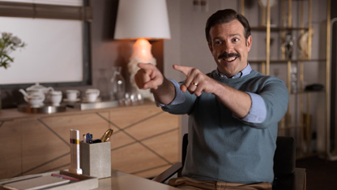

Welcome to F.C. Richmond
Ted Lasso is a comedy series by Apple TV about an American college football coach (Ted Lasso) who is hired to coach a professional soccer team in London, without knowing virtually anything about the sport. It is a heartwarming show that focuses more on character development than the sport at hand (or foot).
What makes Ted Lasso unique is the way it subverts T.V. tropes in a way that's fun and interesting, situations lead to unexpected outcomes that are often delightful.
